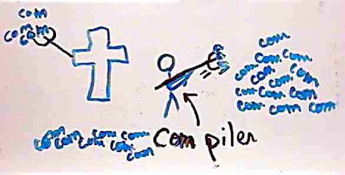

|
|
|
Sponsored Link •
|
Summary
In this episode I introduce the concepts of implicit phasing, explicit phasing and multiple instantiation of modules. Moreover, I discuss various portability issues of the R6RS module system related to the different phase separation concepts.
|
Advertisement
|
We saw in the latest episode that Scheme programs exhibit phase separation, i.e. some parts of the program are executed at expand time (import declarations, macro definitions and macro expansions) and some other parts are executed at runtime (regular definitions and expressions).
However, things are more complicated than that. There are actually three different concepts of phase separation for R6RS-conforming implementations. I will call the three concepts weak, strong and extra-strong phase separation respectively. The difference is in how modules are imported - instantiated is the more correct term - and in how variables enter in the namespace.
Ikarus, Ypsilon, IronScheme and MoshScheme have a weak form of phase separation (also called implicit phasing): there is a distinction between expand-time and runtime, but it is not possible to import variables in the runtime phase only or in the expand time phase only: variables are imported simultaneously for all phases.
Larceny has a stronger form of phase separation (explicit phasing): it can import variables in a specific phase and not in another, depending on the import syntax used. However, if you instantiate a module in more than one phase - for instance both at run-time and at expand-time - only one instance of the module is created and variables are shared.
PLT Scheme has an extra-strong form of phase separation in which phases are completely separated: if you instantiate a module both at run-time and at expand-time, there are two different and independent instances of the module.
In this episode I will show the simplest consequences of phase separation. In the next episodes I will show less obvious consequences, such as the tower of metalevels associated to strong phase separation and the multiple instantiation semantics associated to extra-strong phase separation.
Before discussing strong phase separation, I want to point out that phase separation, even in its weakest form, has consequences that may be surprising at first. For instance, Scheme compilers (but also the Python compiler) cannot recognize obvious errors like a zero division error in the right hand side of a top level definition, as I have shown in episode 19.
I asked for clarifications on the Ikarus mailing list. It turns out that Scheme compilers are not stupid: they can recognize the zero division error, but they cannot signal it since it is forbidden by the Scheme specification. For instance, Llewellyn Pritchard (Leppie), the implementor of IronScheme wrote:
In IronScheme, if I can detect there is an issue at compile time, I simply defer the computation to the runtime, or could even just convert it into a closure that will return an error. This is only one of the things that make Scheme quite hard to implement on a statically typed runtime such as the CLR, as it forces me to box values at method boundries and plenty type checking at runtime.
whereas Abdul Aziz Ghuloum wrote:
Actually, Ikarus does some type checking, and it does detect the division by 0. It however cannot do anything about it in this case since Scheme requires that the exception be raised when the division operation is performed at run time.
Aziz went further and explained that Ikarus is able to evaluate expressions like
(define x 5) (define y (+ x 1)) (define z (* x y))
both in top level definitions in and internal definitions; however, it does so in the optimization phase, after the expansion phase, i.e. too late to make the definitions available to macros. It could however at least report a syntax warning (take it as a feature request, Aziz! ;-)
Aziz also brought up an argument in favor of the current specification. First of all, it is pretty clear that we want expressions like
(define thunk (lambda () (/ 1 0)))
to be compilable, because it is useful to have functions that can raise predictable errors, especially when writing test cases.
Now, a module is not really different from a giant thunk; importing a module calls the thunk (this is essentially what module instantiation is) and possibly raises errors at runtime, but the module per se must be compilable even if contains errors which are detectable at compile time.
The two-phases compilation strategy has the advantage of keeping the compiler conceptually simple, working as a traditional preprocessor integrated in the language: we know that the compiler will manage the macros, but will not perform any evaluation.
Actually, there are strong arguments against having the compiler evaluating generic top level or internal definitions; consider for instance the case when you are reading some data from standard input ((define date (read)): if the definition were evaluated at compile-time, the compiler would stop during compilation to read the data.
Then, some time later, at execution time, the program would stop again to read potentially different data, so that macros would use the compilation time data and the rest of the program the runtime data!
That would be madness. Clearly it makes no sense to evaluate at compile-time definitions depending on run-time values, except possibly at the REPL, where everything happens at run-time and the phases are intermingled.
Finally, the two-phases enable cross compilation: macros will be expanded independently from the architecture, whereas the runtime structures will be compiled and linked differently depending on the architecture of the target processor.
To explain the practical difference between strong and weak phase separation let me go back to the example of the assert-distinct macro of episode 20. I have put the helper function (distinct?) in the (aps list-utils) module, so that you can import it. This is enough for Ikarus, but it is not enough for PLT Scheme or Larceny. In other words, in Ikarus (but also IronScheme, MoshScheme and all the systems using the psyntax module system) the following script
(import (rnrs) (sweet-macros) (only (aps list-utils) distinct?)) (def-syntax (assert-distinct arg ...) #'(#f) (distinct? bound-identifier=? #'(arg ...)) (syntax-violation 'assert-distinct "Duplicate name" #'(arg ...)))
is correct, since the import form instantiates the module (aps list-utils) both at run-time and expand-time, but in PLT Scheme and Larceny it raises an error:
$ plt-r6rs assert-distinct.ss assert-distinct.ss:5:3: compile: unbound variable in module (transformer environment) in: distinct?
The problem is that PLT Scheme and Larceny have strong phase separation and require phase specification: by default names defined in external modules are imported only at runtime, not at compile time. In a sense this is absurd since names defined in an external pre-compiled modules are of course known at compile time (this is why Ikarus has no trouble importing them); nevertheless PLT Scheme (and Larceny) forces you to specify at which phase the functions must be imported.
In particular, if you want to import distinct? at expand time you must use the (for expand) form:
(import (for (only (aps list-utils) distinct?) expand))
With this import form, the script is portable in all R6RS implementations, but its meaning is different: in the psyntax based implementations the name distinct? is imported both at runtime and at expand-time, whereas in PLT and Larceny it is imported only at expand time.
Notice that there are portability issues associated with phase separation. Not using the phase specification syntax results in non-portable code, therefore if you care about portability you must use phase specification even if your implementation does not use it :-(
For instance in systems based on psyntax and in Ypsilon - which is not based on psyntax - this program
(import (rnrs) (for (only (aps list-utils) distinct?) expand)) (display distinct?)
will run, but in PLT Scheme and Larceny it will not even compile.
In a sense, implementation with strong phase separation are more powerful than implementations with weak phase separation, since with implicit phasing it is impossible to import the name distinct? at expand time and not at runtime - notice however that more powerful does not mean necessarily better and the implementations with weak phase separation are easier to use.
The situation for people coming from implementations with strong phase separation is no nice either. For instance the program
(import (rnrs) (for (only (aps list-utils) distinct?) run)) (display distinct?)
will run on all implementations, but you cannot rely on the fact that the named distinct? will be imported only at run-time and not at expand-time.
The point however is moot since the R6RS forbids the same name to be used with different bindings in different phases (see section 7.1, page 23). In particular, if you import the name distinct? at run-time the compiler will reserve the name for all phases: it cannot be reused at expand time, unless it has the same binding.
In other words, the namespaces in the different phases are separated but not completely independend, which in my opinion undermines the concept of strong phase separation. I believe PLT Scheme in non-R6RS mode has fully independent namespaces for different phases, but this again is not portable.
The reason for such limitations and inconsistencies can be inferred from this extract from R6RS editors mailing list (from the answer to formal comment 92):
A precise specification of the library system remains elusive, partly because different implementors still have different ideas about how the library system should work....
The different opinions are supported by two different reference implementations of R6RS libraries: one by Van Tonder and one by Ghuloum and Dybvig. In addition, PLT Scheme implements a library system...
Despite the differences in the reference implementations, it appears that many programs will run the same in both variants of the library system. The overlap appears to be large enough to support practical portability between the variants.
Under the assumption that the overlap is useful, and given the lack of consensus and relative lack of experience with the two prominent variants of draft R6RS libraries, the R6RS specification of libraries should be designed to admit both of the reference implementations. As a design process, this implementation-driven approach leaves something to be desired, but it seems to be the surest way forward.
Basically, the R6RS standard is the result of a compromise between the partisans of explicit phasing - people wanting to control in which phases names are imported - and the partisan of implicit phasing - people wanting to import names at all phases, always.
A compromise was reached to make unhappy both parties.
The same kind of compromise was reached on the subject of multiple instantiation: all behaviors are accepted by the R6RS standard, so you cannot rely on the number the times a library is instantiated.
For instance, consider a simple do nothing library like the following:
#!r6rs (library (x) (export) (import (rnrs)) (display "instantiated x!\n") )
If you now run the following script
$ cat script.ss (import (for (x) expand run))
the message instantiated x! will be printed only once by Larceny, but twice by PLT Scheme. For comparison, Ypsilon prints the message only once (it has single instantiation semantics) and Ikarus does not print any message at all (!), since the module is not used (it would print the message only once if the module were used).
In other words, authors of portable libraries cannot rely on multiple instantiation, nor on single instantiation.
The final outcome for the R6RS module system is certainly unhappy, but I guess it was the best that the R6RS editors could obtain, given the pre-existing situation. Another point in favor of languages designed by (benevolent) dictators!
Have an opinion? Readers have already posted 3 comments about this weblog entry. Why not add yours?
If you'd like to be notified whenever Michele Simionato adds a new entry to his weblog, subscribe to his RSS feed.
 | Michele Simionato started his career as a Theoretical Physicist, working in Italy, France and the U.S. He turned to programming in 2003; since then he has been working professionally as a Python developer and now he lives in Milan, Italy. Michele is well known in the Python community for his posts in the newsgroup(s), his articles and his Open Source libraries and recipes. His interests include object oriented programming, functional programming, and in general programming metodologies that enable us to manage the complexity of modern software developement. |
|
Sponsored Links
|